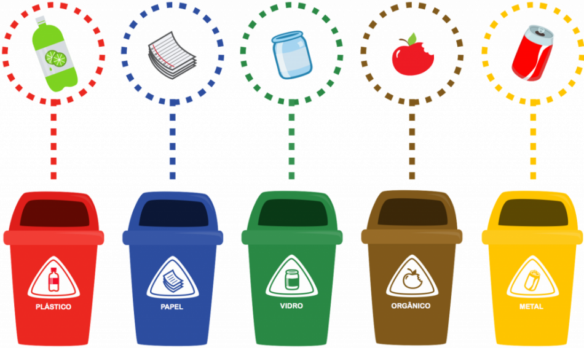

Como separar os resíduos corretamente?
Os resíduos quando estão misturados se tornam mais difíceis de serem reaproveitados, por isso é fundamental que sejam separados corretamente nas residências. Para fazer isso, primeiramente é necessários separar os resíduos orgânicos como restos de alimentos, folhas, sementes dos resíduos sólidos recicláveis como papel, vidro, plástico e metal.
Dicas de seperação de resíduos
 Lave e seque embalagens que continham produtos orgânicos antes do descarte.
Não amasse e nem molhe os papeis, o melhor é dobrá-los para ocupar menos volume.
Não coloque garrafas e frascos junto com vidros planos.
Se uma mesma embalagem for composta de materiais diferentes como plástico e papel, separe as partes e coloque nos recepientes corretos
Para descarte de vidro quebrado ou materiais perfurocortantes embrulhe em um papel mais grosso como jornal para evitar acidentes.
Lave e seque embalagens que continham produtos orgânicos antes do descarte.
Não amasse e nem molhe os papeis, o melhor é dobrá-los para ocupar menos volume.
Não coloque garrafas e frascos junto com vidros planos.
Se uma mesma embalagem for composta de materiais diferentes como plástico e papel, separe as partes e coloque nos recepientes corretos
Para descarte de vidro quebrado ou materiais perfurocortantes embrulhe em um papel mais grosso como jornal para evitar acidentes.